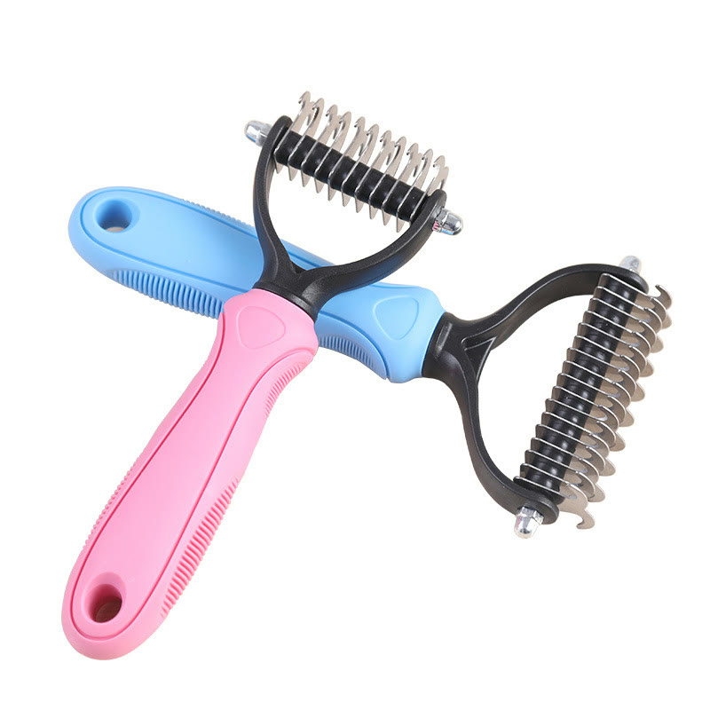
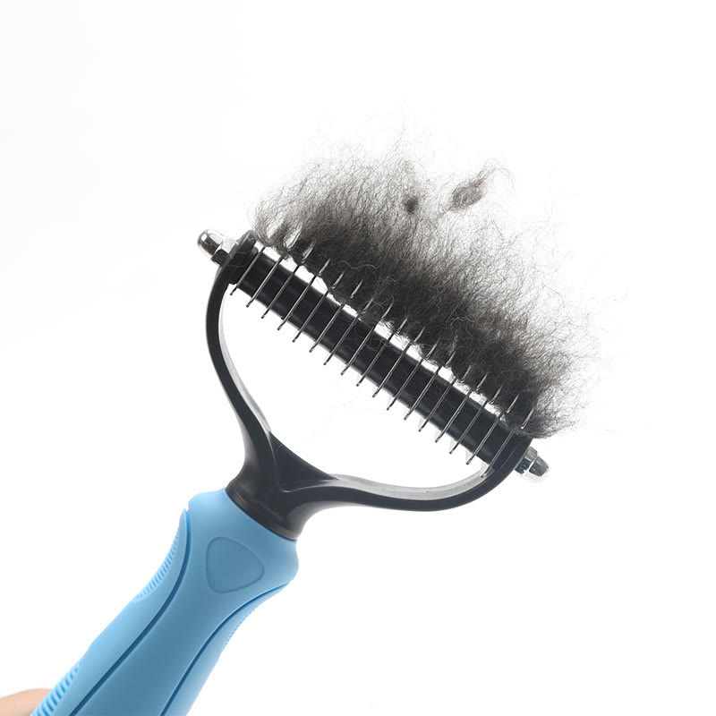
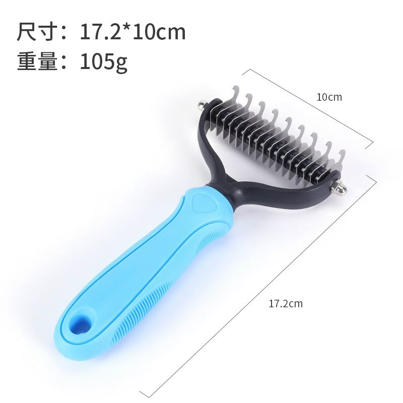
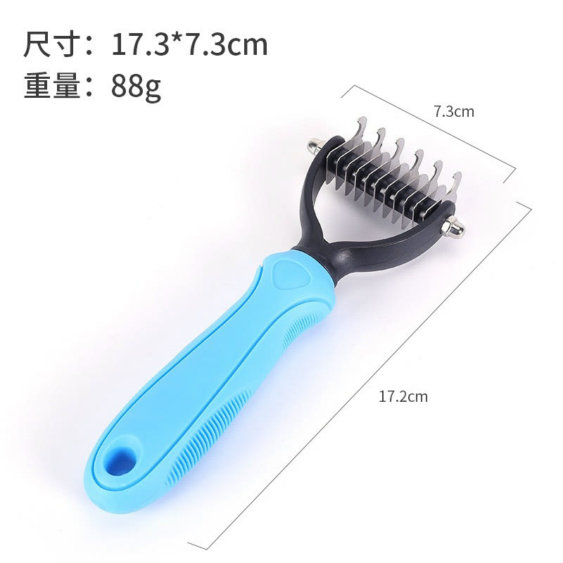

Achado nº 53
Seu pet tem nó no pelo que a escova comum não desfaz?
Desembolador de pelos para cachorro e gato (pente rake)
★ 4,9 · mais de 2.600 avaliações na Shopee




O que diz a página oficial do produto
- É um pente do tipo rake para cães e gatos, com cabo de plástico ABS e lâminas serrilhadas de aço inox
- Segundo o anúncio, as lâminas desfazem nós e emaranhados mantendo o comprimento do pelo
- Segundo o anúncio, serve para pelo longo e para pelo curto
- Tem dois tamanhos: P, com 17,3 por 7,3 cm, e M, com 17,3 por 10 cm
- Vem em azul ou rosa
- Na Shopee, tem nota 4,9 com mais de 2.600 avaliações e mais de 4 mil vendidos
Link de afiliado: se você comprar por ele, a Achadaria pode receber uma comissão, sem custo extra para você. Preço, estoque e entrega são da loja e podem mudar; confira lá antes de comprar.